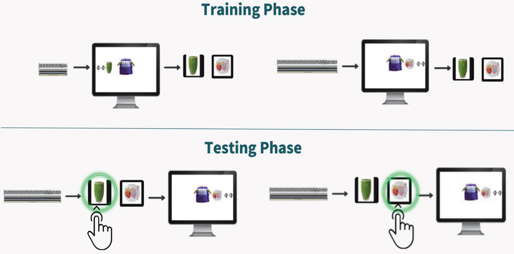
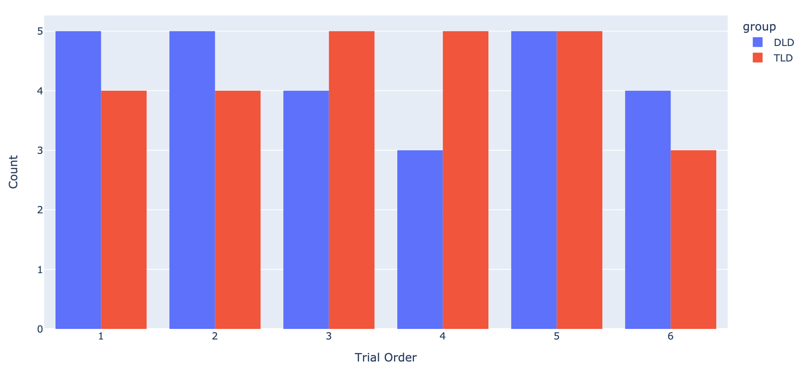
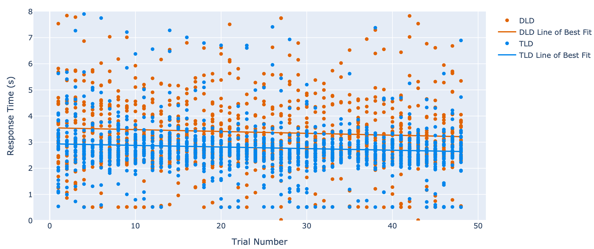
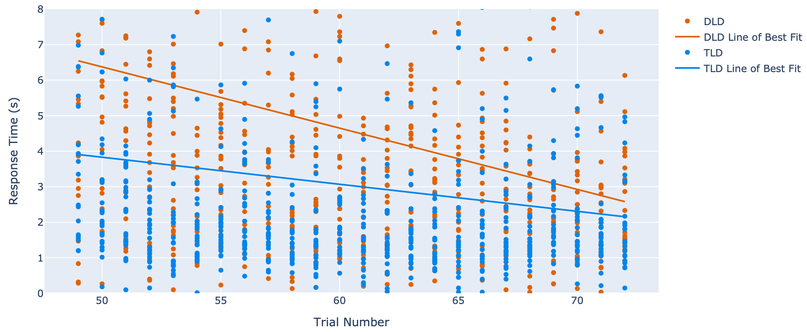
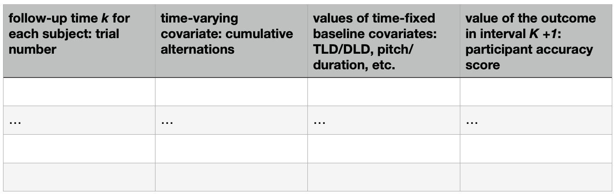

Separating intended versus unintended learning effect in implicit learning with preschoolers
CADES Consulting Lab
Executive Summary
The primary goal of the work described herein is to separate out the impact of an alternating visual cue from the intended learning effect of an auditory cue on a participants response in experimental data on implicit learning in preschoolers. Multiple analysis approaches were considered which culminated in moving toward causal inference approaches often seen in longitudinal studies in medicine where time-varying confounders are commonplace. Our current recommendation to pursue two analysis methods which differ from one another but seem most likely to be successful in achieving the goal of separating the impact of the confounding visual cue as well as both being feasible to execute from a technical perspective.
Introduction and Background
An experimental study was done comparing implicit learning of preschoolers with developmental language disorder (DLD) versus preschoolers with typical language development (TLD). Participants were first tested on their ability to differentiate between the auditory cues that would be used in the subsequent parts of the experiment. Then, participants underwent a computer-based “training” period where a “monster” on the computer screen asked for food or drink by emitting sounds of a specific pitch or duration. In other words, participants were given an auditory cue in the form of a sound with a pitch or duration, which was associated with a specific visual cue in the form of an image of food or drink. Participants would press keys on the computer keyboard either before or after the image appeared to indicate whether food or drink was being requested based on the sound emitted by the monster. In the testing phase of the experiment, participants were exposed to the sound, and they indicated on the keyboard whether the monster was asking for food or drink. Only after the participant entered their response on the keyboard did the image of the food or drink appear on the computer screen. Note that in both training and testing phases, the image of the drink would appear from the left-hand side of the screen and the image of food would appear from the right. The order of the food or drink trials were pseudo-random. However, in the process of psuedo-randomizing, the food and drink typically alternated. This alternation allowed participants to formulate a heuristic to predict whether the next trial would be food or drink based on the present trial. Figure 1 shows a visual depiction of both training and testing phases of the experiment.

Due to the frequent alternation of food and drink and the associated heuristic, participants adopted to predict whether food or drink be indicated in the subsequent trial, the experimental results show a combined learning effect. Specifically, the experimental results contain both the effect of the learned alternation heuristic with the learned association of a sound with the food or drink.
The goal of the work herein was to determine if the learned alternation heuristic could be separated from the learned sound and food/drink association.
Data
Basic Data Description
The experimental results utilized in the present work were in tabular form. The response variable shows whether the participant was correct or incorrect in indicating whether the monster requested food or drink. Thus, the response variable has a binary form. Additional variables explored were response time in seconds, trial number, trial order type, sound type, experimental phase (training, testing), alternation from previous trial, and participant type (TLD, DLD). There were 26 participants with DLD and 26 participants in the TLD class. Participant data such as school test scores were recoded in order to ensure participants’ identifiable information remained confidential.
Exploratory Data Analysis
Since the fundamental goal herein is to separate the alternation on the response variable from any learned association between the pitch or duration of the sound and the food/drink, the number of participants in each class was first examined. Figure 2 shows the count of participants with DLD versus TLD in each trial order group. The trial order group specifies the sequence of alternation of the stimuli in the training and tests.

In Figure 2, the count of participants in each trial order group with DLD or TLD varies between 3 and 5. Thus, the number of participants in each class is not perfectly balanced. This small imbalance in participants will impact any subsequent analysis conditioned on TLD/DLD and trial order. Note that the count of participants with TLD versus those with DLD is perfectly balanced, with both counts being 26.
The response variable for each trial is whether the keyboard entry by the participant correctly or incorrectly indicates whether food or drink was called for by the monster’s sounds. However, the response time for the participant’s keyboard entry does suggest something about how the participant is learning during the training or testing phases. Figure 3 shows the participant response time in seconds as a function of the trial number during the training phase of the experiment. Data for participants with DLD versus TLD are shown by different marker colors in Figure 3, and a linear fit through the DLD versus TLD groups is superimposed on the response time. Figure 4 shows the corresponding data for response time as a function of the trial number for the testing phase of the experiment. Note that the ordinary least squares linear fit is shown for convenience to obtain a visual indicator of key trends. In order to make statements as to whether differences in slopes are statistically significant, hypothesis testing should be performed. For example, if the slope of the linear fit of the DLD participants during training is \(\beta_{1,train}\) and the slope of the linear fit of the DLD participants during testing is \(\beta_{1,test}\), we could test the null hypothesis of \(\beta_{1,train}=\beta_{1,test}\) versus \(\beta_{1,train} \neq \beta_{1,test}\) to determine if the slopes are significantly different.

Surprisingly, the slope of the linear fit in the training period (see Figure 3) is smaller than in the testing period (see Figure 4), particularly for the DLD participants. This response time change suggests that the participants’ interaction with the stimuli and, thus, any learning is perhaps still occurring during the testing phase of the experiment. We expected different sets of trends in Figures 3 and 4. Specifically, we expected that the response time would change more in the training phase than the testing phase and we expected a relatively minor change in response time during the testing phase. Furthermore, we expected the response time to change more for TLD versus DLD participants if the TLD participants learned at a greater rate than DLD participants.

Connect the dots: EDA
Analysis methods aimed at isolating the impact of the visual alternation of food/drink from the impact of the sound on the participant’s keyboard response typically involve conditioning on the alternation indicator variable and the sound variable. The number of participants in each trial order class is not perfectly balanced, which may reduce our ability to detect differences. Furthermore, one analysis approach would be to conceive of the trials as individual treatment periods in a cross-over experimental design. The fact that the response time changes as a function of the trial number indicates an interaction from period to period which would increase Type I error in an analysis of this type (see Methods section for further information).
Methods
Methods examined and determined unsuitable
First, we explored separating the audio learning cue from the unintended visual cue as a process of fitting a mixed effects model based on a crossover experimental design. This seemed to be a promising approach that might allow us to estimate the effect of the visual cue on the testing accuracy of the children, and thus control for it.
A mixed effects model based on conceptualizing each trial of the present experiment as a period in a crossover design initially seemed like a good choice. In a crossover experimental design, the study involves sequences of treatments applied to individual subjects over successive time periods. In this type of experiment, the individual participant becomes a random effect due to the study participants being a sample from the theoretical larger populations of children with DLD and TLD. So a mixed effects model could include the fixed effect of the implicit learning treatment (the sound files), the random effect of the participant, and the fixed effect of the alternation pattern.
We did note that there are inherent difficulties with approaching this study as a crossover design. One of the critical challenges in a crossover design can arise when a treatment effect from one period is still present in subsequent periods. A treatment effect that persists from one period to later periods is called a carryover effect. In the present study, carryover effects would be present if learning from one trial impacted the next or subsequent trials. In Figure 4, we observed that response times in the testing trials decreased over the course of the testing phase, suggesting that the participants were continuing to learn during the trials in the testing phase. Due to the carryover effects that appear to be present between subsequent trials in the testing phase of the experiment, we concluded that analyzing the experimental data as if it was a crossover experimental design would not be suitable (see “Lesson 15: Crossover Designs STAT 509” (n.d.)).
Another approach we considered was to fit mixed effects model with additional lag terms. We envisioned that lag terms would capture the alternation from previous trials that could potentially impact the present trial under consideration. For example, one such model with lag terms would be
\[ y_t = f(group, soundDim_t, soundLevel_t , trialOrder, trial, side_{t-1}) \tag{1}\]
where \(y_t\) is the response of correct or incorrect for trial \(t\), group is the language development group TLD or DLD, \(soundDim_t\) is pitch or duration for trial \(t\), \(soundLevel_t\) is the pitch or duration level of trial \(t\), \(trialOrder\) is the participant trial order group which describes the sequence of food or drink, \(trial\) is the trial number, and \(side_{t-1}\) describes whether the side alternated in the previous trial. We investigated using the gam() function from the R package mgcv to fit a mixed effects model similar to Equation 1 and was implemented by Simpson et al. (Simpson (2021)). However, we determined that another approach was needed because the treatment is time-varying and the confounding due to side alternation is also time-varying which cannot be handled adequately in this method.
Methods for further consideration
Time-varying treatment and time-varying confounding are sometimes present in longitudinal studies common in medicine. As a result, various methods have been developed to analyze such studies, including causal inference methods. Three causal inference methods were considered, including the G-formula method, inverse probability weighting, and G-estimation. Of these, the G-formula approach seems most appropriate and feasible since an R package has been developed to implement this method (McGrath et al. (2020)), and interactions between the time-varying treatment and time-varying covariates can be explored and are explicitly modeled (Daniel et al. (2013)). Furthermore, both binary and continuous response variables can be handled, allowing the method to be applied to each trial or collectively to estimate a total effect (Daniel et al. (2013)).
In addition to causal inference methods, another approach that has been used for longitudinal studies with time-varying treatments and time-varying covariates in the literature is sequential conditional mean models (SCMM) fitted using generalized estimating equations (GEEs) (Keogh et al. (2018)). While the seminal work on the use of SCMMs fitted using GEEs was published in 2018, the approach has been applied by Beccia et al., wherein an appropriate R package to carry out modeling using the SCMM fitted using a GEE was identified (Beccia et al. (2022)). One of the advantages of SCMMs is that these models are essentially standard regression models with multiple additional terms reflecting past treatment exposure as well as exposure to the time-varying covariate(s). Furthermore, SCMMs are also adjusted via propensity score to improve robustness. The propensity score of a participant at time \(t\) is the participant’s probability of having the treatment exposure at time \(t\) conditioned on experimental conditions at all previous time points.
The open-source package gfoRmula, released in 2020, implements the G-formula (https://www.cell.com/patterns/fulltext/S2666-3899(20)30008-8). Adapting the package to the language development study primarily involves defining the output type as well as the input data frame. The likely best outcome type to use is “continuous end of follow-up,” using each participant’s accuracy score at the end of the testing period as the response variable. Then an input data frame to the main gformula() function must be defined, as shown in the below figure. We would then take coefficient estimates from the resulting models and interpret the effect of alternation on participant accuracy.

Conclusions and Recommendations
Separating the effect of an auditory cue from an unintended alternating visual cue is a challenging problem. The experimental data has been explored and characterized. Analysis methods were identified and ultimately discarded. Two promising approaches, the G-formula method and sequential conditional mean models (SCMM), have been identified, which have been successfully applied in the literature. These methods have been used advantageously in studies with time-varying treatments and time-varying covariates. In the present experiment, the time-varying treatment is the combined sound type (pitch or duration) with the level of the sound, and the time-varying covariate is the impact of the alternating visual cue. The G-formula method and SCMMs seem technically feasible, and R packages have been found to enable the execution of both approaches. We recommend that both methods be pursued in future work.